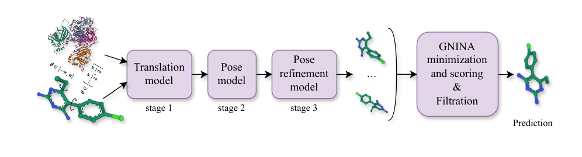
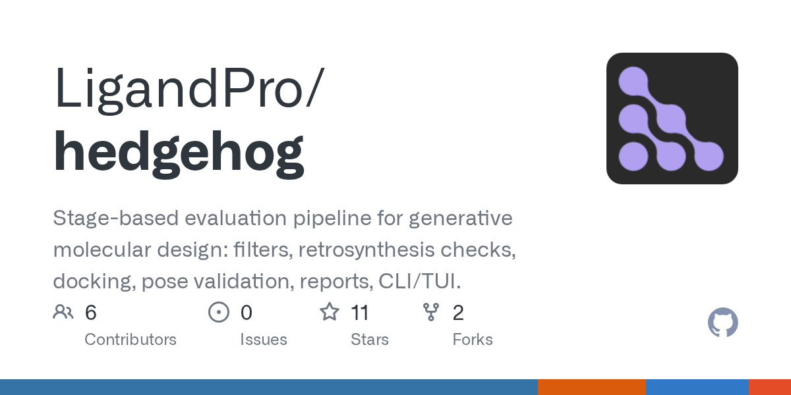
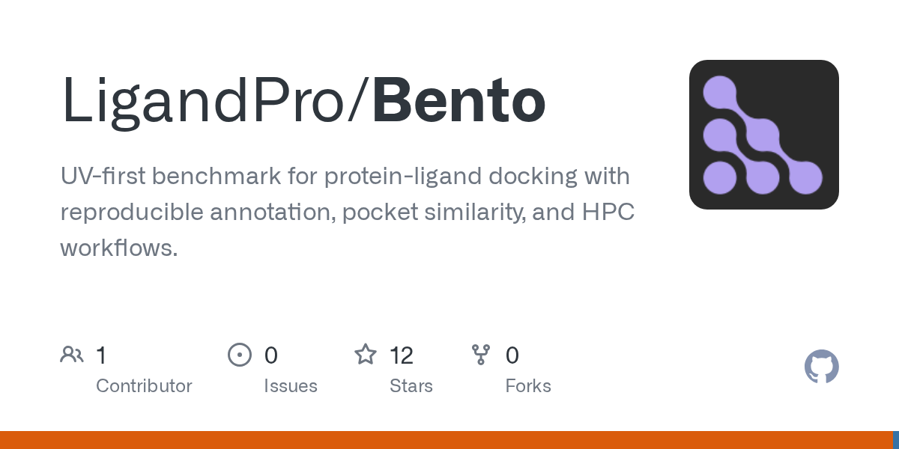
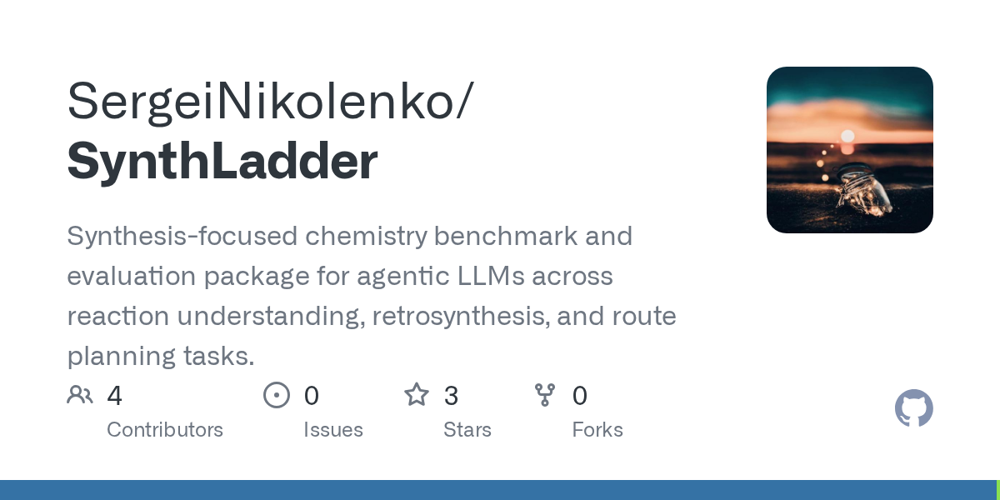
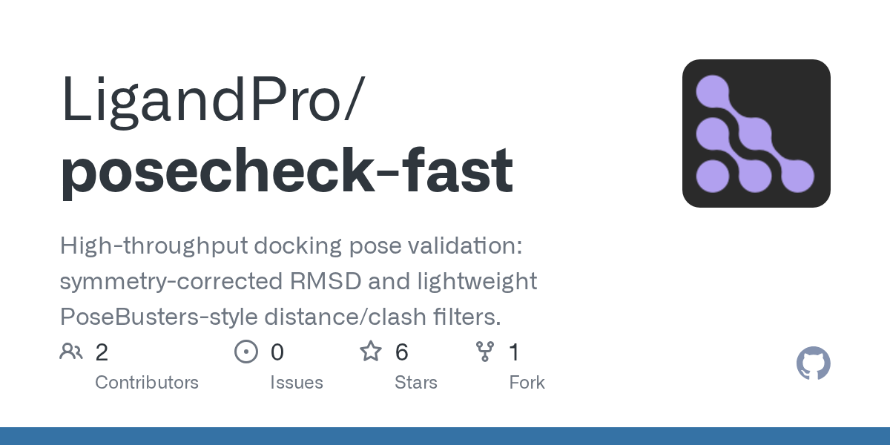
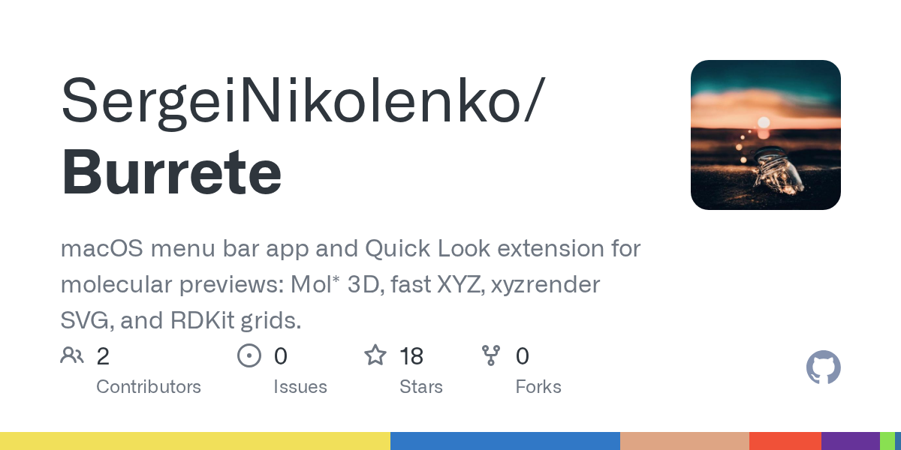

Leading computational chemistry and AI drug-discovery R&D across docking, molecular design, evaluation, and research infrastructure.
Hi, I’m Sergei
Staff Scientific ML Engineer and computational chemistry lead. I build practical AI systems for molecular discovery.
About
I work at the intersection of scientific machine learning, computational chemistry, and research engineering. My focus is turning molecular models into reliable systems for docking, generative design, chemical retrieval, spectra, evaluation, and high-performance research workflows.
Work Experience
Developing chemistry LLM/RAG, molecular spectra, reaction-understanding, retrieval, tool workflows, and reproducible scientific reporting systems.
Researched machine-learning methods and software for molecular modeling, chemical data, and computational chemistry.
Built and evaluated machine-learning approaches for molecular property prediction and data-driven drug discovery.
Education
Skills
Scientific ML
Computational Chemistry
Molecular Docking
Generative Design
Chemical LLM / RAG
Molecular Spectra
RDKit
PyTorch
Python
HPC / SLURM
Benchmarking
My Projects
Check out my latest work
I build open scientific systems for molecular discovery, model evaluation, and chemistry-native research workflows.

Matcha
Multi-stage Riemannian flow matching for physically valid molecular docking, with scoring, pose filtering, and benchmarking workflows.

HEDGEHOG
Stage-based evaluation for generative molecular design: filters, retrosynthesis checks, docking, pose validation, and reports.

Bento
A reproducible protein–ligand docking benchmark with curated annotations, pocket similarity, and HPC workflows.

SynthLadder
A chemistry benchmark for agentic LLMs across reaction understanding, retrosynthesis, route planning, and MS/MS tasks.

posecheck-fast
High-throughput docking pose validation with symmetry-corrected RMSD and lightweight distance and clash filters.

Burrete
Native macOS molecular previews with Finder and Quick Look integration, Mol*, fast XYZ rendering, and RDKit-powered grids.
Selected Systems
I like building things
From research prototypes to dependable scientific software, these projects reflect how I approach computational chemistry.
Matcha
Physically valid generative docking
HEDGEHOG
Evaluation for molecular generators
Bento
Reproducible docking benchmarks
SynthLadder
Chemistry tasks for agentic LLMs
posecheck-fast
Fast, reliable pose validation
Burrete
Native molecular previews for macOS
Get in Touch
Want to discuss scientific ML, computational chemistry, or useful research software? Reach me through LinkedIn or explore my work on GitHub.